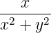
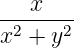
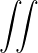
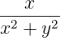
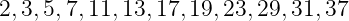
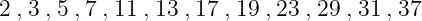

, v = , and w = 0.
, v = , and w = 0.
Differentials often need a bit of help with their spacing as in
| xy2dxdy = x2y3, |
whereas vector problems often lead to statements such as
|
u = , v = , and w = 0.
|
Occasionally one gets horrible line breaks when using a list in mathematics such as listing the first twelve primes  . In such cases, perhaps include \mathcode‘\,="213B inside the inline maths environment so that the list breaks:  . Be discerning about when to do this as the spacing is different.